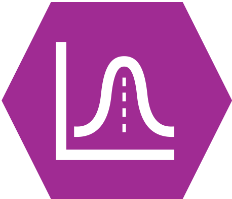
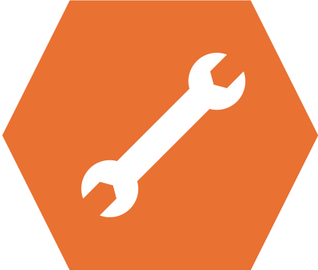

Week 7 : Testing data distributions and Non-parametric alternative tests
This week we will explore how to use the jmv package in R to test hypotheses about a dataset using t-tests and to compute effect sizes corresponding to those tests. We will use those effect sizes to help interpret the sensitivity and power of our experiments.
|  | Quantitative Methods |
|---|---|
| Assumptions of parametric tests | |
Data transformation with the log() function |
|
| Histograms | |
| QQ plots |
|  | Data Skills |
|---|---|
Data visualisations using ggplot |
|
| Run non-parametric alternative tests in Jamovi and R |
| Open Science | |
|---|---|
| Replicate part of a published analysis |
1. The Dataset
Flashbacks and intrusive thoughts are a core features of post-traumatic stress disorder (PTSD). These can be highly distressing and disruptive for the person suffering from them and there are few early interventions that are known to help.
One unexpected and intriguing proposal in the last few decades suggests that carrying out very engaging visuo-spatial tasks with a neutral emotion in the immediate aftermath of a traumatic event may help reduce later flashbacks (Holmes et al. 2009). This is thought to be due to intense visuo-spatial processing disrupting the formations of the flashback memories, which are themselves flashbacks.
This week, we’re going to look at the dataset from one experiment attempting a replication and extension of this effect (James et al. 2015). The abstract of the paper is below
Memory of a traumatic event becomes consolidated within hours. Intrusive memories can then flash back repeatedly into the mind’s eye and cause distress. We investigated whether reconsolidation—the process during which memories become malleable when recalled—can be blocked using a cognitive task and whether such an approach can reduce these unbidden intrusions. We predicted that reconsolidation of a reactivated visual memory of experimental trauma could be disrupted by engaging in a visuospatial task that would compete for visual working memory resources. We showed that intrusive memories were virtually abolished by playing the computer game Tetris following a memory-reactivation task 24 hr after initial exposure to experimental trauma. Furthermore, both memory reactivation and playing Tetris were required to reduce subsequent intrusions (Experiment 2), consistent with reconsolidation-update mechanisms. A simple, noninvasive cognitive-task procedure administered after emotional memory has already consolidated (i.e., > 24 hours after exposure to experimental trauma) may prevent the recurrence of intrusive memories of those emotional events
This experiment shows participants a 12-minute distressing film to simulate a traumatic event (there is a more detailed description in the paper for those who may want more information, note the discussion around the ethics of showing participants these materials in the paper). Participants completed three sessions in the experiment day 0, day 1 and day 7. They also kept a diary recording their thoughts and memories about the film throughout the week. Participants viewed the film on day 0 and completed a range of experimental tasks on days 1 and 7.
Crucially, participants were allocated to one of four conditions in the time immediately following the video. One group played tetris as a distraction, a second group completed a reactivation task which was throught to help reduce the emotional response to the video, a third group did both tetris and reconsolidation and a fourth group was a no-task control group.
2. The Challenge
This week - we will explore two of the four conditions to test the following hypothesis:
Playing tetris will after a trumatic event will reduce number of subsequent intrusive memories
Along the way, we’ll take a detailed tour of our options when working with non-normally distributed data. We’ll begin to look at some more advanced options for creating data visualisations using a R package named ggplot - or not.
3. Exploring the data using skills so far
Set up a data filter to isolate two conditions Condition == "No-Task Control" or Condition == "Reactivation+Tetris"
Explore descriptives - what do you find? Strong postive skew and some kutosis in both, QQ plot confirms. Day one more prominent.
Compute independent samples t-test with effect size and normality checks.
How would you report the Mann-Whitney U test.
Answer the following questions in the spaces provided.
2 + 2 is
2 + 2 is